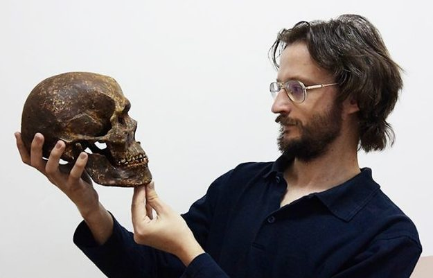
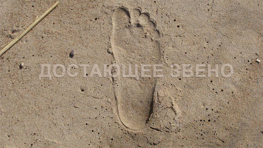
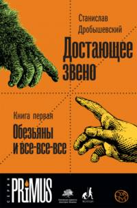

Станислав Дробышевский
Станислав Владимирович Дробышевский является одним из моих самых любимы популяризаторов науки. Он способен объяснить сложные темы простыми словами для большой аудитории, приводя примеры изобщественной жизни. Так же он антрополог, закончивший биофак МГУ. Член Российского отделения Европейской антропологической Ассоциации. Автор ряда учебных пособий для студентов, публикаций в периодических научных изданиях и научных монографий.
Участие в проекте
Станислав является научным редактором портала, тщательно проверяя все статьи, выкладываемые на сайт. Сам Дробышевский принимает активное участие в написании статей. Например, за все время существования портала, он написал около 165(!) статей. Так же он ведет свой авторский проект специально для портала Antropogenez.RU под названием Достающее звено. Проект рассказывает о методах антропологии и антропогенеза, смежных науках и заблуждениях. Станислав внимательно следит за новостями науки, в частности за археологией, палеонтологией и антропологией. За счет чего сайт всегда осведомляет своих пользователей о новых открытиях или опровержениях простыми словами. На сайте даже есть отдельный раздел под назаванием Словарь Антрополога.
Книги Станислава Дробышевского

- Происхождение человека (2020)
- Байки из грота: 50 историй из жизни древних людей(2018)
- Достающее звено. Книга 1. Обезьяны и все-все-все (2017)
- Происхождение человеческих рас: закономерности расообразования: Африка (2013)
- Предшественники. Предки? австралопитеки, "ранние Homo" (2010)
- Предшественники, предки? неоантропы верхнего палеолита (Африка, Ближний Восток, Азия) (2002)